Benchmarking operation-count proxies for edge-inference energy
O.J. Akojede¹, E.V. Jwelum¹ and T.E. Hamzat²
¹ Department of Biomedical Engineering, University of Lagos, Nigeria
² Department of Mechanical Engineering, University of Lagos, Nigeria
Project phase: Model-corpus preparation, static analysis and formal measurement on the Raspberry Pi 4 and ESP32-S3 are complete. The study contains 387 accepted hardware trials.
Abstract
Operation counts such as Floating Point Operations (FLOPs) and Multiply-Accumulate Operations (MACs) are widely used as proxies for computational efficiency in artificial intelligence. However, these metrics quantify arithmetic workload alone, whereas actual energy consumption depends on both computation and data movement. As AI inference is increasingly deployed on heterogeneous edge hardware, ranging from microcontrollers to cache-based and highly parallel processors, the extent to which operation counts remain reliable predictors of energy consumption is not fully understood.
This study systematically evaluates the relationship between operation-based complexity metrics and measured energy consumption across a diverse set of model architectures and edge computing platforms. For each model-platform pair, operation counts are compared against directly measured inference energy, execution latency, and graph-derived memory proxies.
The resulting benchmark characterizes how the relationship between operation counts and energy varies across several model architectures and two representative edge platforms: a Raspberry Pi single-board computer and an ESP32-S3 microcontroller, identifies conditions under which operation counts provide reliable estimates of energy cost, and highlights scenarios in which they systematically misrepresent deployment efficiency. These findings contribute to a more rigorous understanding of energy-aware AI evaluation.
Across 258 Raspberry Pi and 129 ESP32-S3 trials, MAC count tracked broad energy scaling on both platforms. However, two prespecified model pairs differed by only 0.203%–1.074% in MAC count while depthwise energy was 44.8%–49.5% higher on the Raspberry Pi and 82.4%–88.9% higher on the ESP32-S3. Measured latency had the strongest association with energy on both platforms. Operation count is therefore useful for broad within-platform scaling but cannot reliably quantify the energy gap between structurally different models across hardware and runtime environments.
Keywords: edge inference; energy measurement; operation counts; TinyML; TensorFlow Lite; embedded machine learning
1. Research problem
Artificial intelligence inference is increasingly deployed outside centralized cloud infrastructure and onto edge devices. This transition is driven by constraints that make local inference preferable to remote execution. The computational and energy requirements of a model influence whether it can run within available memory budgets and operate for extended periods on battery-powered hardware while satisfying latency needs.
Floating-point operations and multiply-accumulate operations are commonly used to compare model complexity because they can be computed without access to the final device. Parameter count and artifact size are used for the same reason. These quantities are useful descriptions of a model, but they cannot accurately tell how much energy it consumes.
The physical cost of inference is produced by the interaction between a deployed graph and its execution environment. Arithmetic contributes to that cost, as do memory access, activation lifetime, operator implementation and runtime scheduling [1,2]. A depthwise-separable network may require fewer MACs than a standard-convolution network while creating a different sequence of intermediate tensors. The difference may be insignificant on one processor and consequential on another.
Direct measurements have already established that raw operation count is not universally equivalent to inference energy. Wess et al. found latency more predictive than layer operation count across several DNN accelerators [32], while Speckhard et al. observed substantial energy variation among mobile-CPU architectures with similar FLOP counts and a strong latency-energy relationship [18]. Lahmer et al. derived layer- and board-specific energy models for NVIDIA edge boards [33], and Guo et al. combined network-structure and device encodings in a learned cross-device predictor [34]. Mobile system-on-chip studies similarly show that hardware-aware execution characteristics can outperform FLOPs alone [5]. Conversely, operation count can remain useful inside a tightly constrained microcontroller search space [13].
Related work also covers systematic energy reporting and direct edge benchmarking [3,14,15,19], model-based energy prediction [16,17], and architecture studies showing that memory access and operator implementation affect realized efficiency [20,21].
Building on this evidence, the present study tests whether the predictive value of operation counts and the model rankings they imply remain stable when the same set of model artifacts is evaluated across different hardware classes. It focuses particularly on models with different architectures but nearly identical operation counts.
The study therefore asks:
- How strongly do FLOPs and MACs correspond with measured inference energy on representative edge platforms?
- Does that relationship change between a microcontroller and a Linux-based single-board computer?
- Do memory-facing metrics or measured latency explain energy more effectively than operation count alone?
- When MAC counts are closely matched, do differences in graph structure expose failures in arithmetic-only estimates?
2. Experimental design
The experiment is divided into a predictor phase and a measurement phase. The predictor phase fixes the data partitions, model corpus, task-quality criteria, deployment artifacts, static metrics and controlled comparisons before physical energy results are inspected. The measurement phase executes those artifacts at frozen checkpoints without retraining or graph modification.
Throughout thr measurement phase, one fixed model artifact is executed under one fixed hardware and runtime configuration. The primary cross-platform condition uses the same 43 full-integer INT8 TensorFlow Lite artifacts on the Raspberry Pi and ESP32-S3. Raspberry Pi FP32 measurements form a separate within-platform precision analysis. Repeated measurement windows are used to quantify how much technical variation occurs for a model-platform condition and are not treated as additional independent models.
In the Raspberry Pi experiment, every repetition contained all 86 model–precision conditions once in randomized order. The ESP32-S3 experiment likewise measured each of the 43 INT8 conditions once per randomized repetition. This randomized approach prevented one architecture class or precision type from being consistently measured earlier or at a lower device temperature.
Corpus-level confidence intervals use 10,000 percentile bootstrap resamples of complete architecture families, preserving the dependence among widths from the same family [23].
3. Model corpus
The canonical corpus contains 43 trained neural networks. Four models act as application-oriented reference-style workloads: a ResNet-8-style image classifier, a DS-CNN keyword-spotting network, a width-reduced MobileNetV2 visual-wake-word model and a fully connected ToyADMOS autoencoder. These workloads correspond to task categories represented in MLPerf Tiny, although they are described as benchmark-aligned unless an official architecture and protocol are reproduced exactly [4].
The remaining 39 models were built as structural probes. Thirty-eight form eight replicated width families; one dense keyword-spotting bottleneck acts as a singleton control. The families vary convolution type, activation resolution, channel width, residual structure and parameter concentration while retaining a valid inference task.
| Model family | Task | Models | Experimental role |
|---|---|---|---|
| Standard-convolution CNN | CIFAR-10 | 7 | Arithmetic-dense width series |
| Depthwise-separable CNN | CIFAR-10 | 7 | Primary contrast with standard convolution |
| High-resolution/low-channel CNN | CIFAR-10 | 4 | Sustained spatial-activation probe |
| Early-downsampling CNN | CIFAR-10 | 4 | Activation-lifetime contrast |
| Multilayer perceptron | CIFAR-10 | 4 | Parameter-heavy, non-convolutional probe |
| Bottleneck-residual CNN | CIFAR-10 | 4 | Skip-connection and tensor-liveness probe |
| Standard-convolution KWS CNN | Speech Commands | 4 | Audio-domain standard-convolution series |
| Depthwise-separable KWS CNN | Speech Commands | 4 | Audio-domain depthwise comparison |
| Dense KWS bottleneck | Speech Commands | 1 | Parameter-concentration control |
| Reference-style workloads | Four tasks | 4 | Application-oriented anchors |
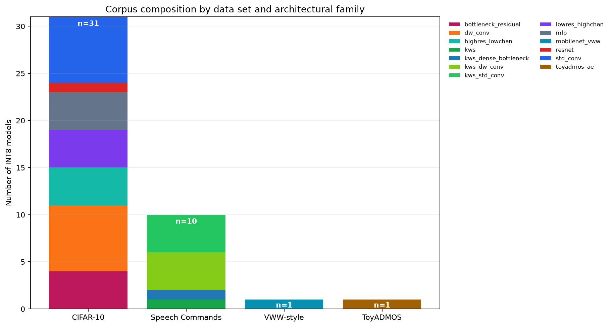
Figure 1. Corpus composition. CIFAR-10 and Speech Commands provide the replicated structural comparisons.
The corpus was intentionally designed around experimental comparisons instead of equal representation of architectural families. Standard and depthwise-separable CNNs received the densest width sampling because their near-MAC comparisons form the study’s primary controlled test: they allow models with similar arithmetic workloads but different activation and operator structures to be compared. Seven widths were therefore used for each CIFAR-10 family to increase coverage around potential MAC-matched regions. Four widths were retained for the secondary structural-probe families, providing enough points to observe within-family scaling without allowing those exploratory contrasts to dominate the corpus. The architectural anchors provide reference points for comparing the intentionally constructed experimental models with architectures resembling real TinyML workloads.
4. Data preparation and model deployment
All stochastic split and selection procedures use recorded seeds, and the resulting indices are retained. Normalization statistics are estimated from model-fitting data only. Test data does not contribute to training, early stopping or post-training quantization calibration.
4.1 Inference tasks
CIFAR-10. The official training set was divided into 45,000 fitting and 5,000 validation images by seeded permutation. Images were scaled and standardized using fitting-partition statistics. The official 10,000-image test split was retained for final evaluation [6].
Speech Commands. Version 0.02 was partitioned with its published validation and test lists. One-second, 16 kHz recordings were represented as 49 × 10 mel-frequency cepstral coefficient matrices. The fitting, validation and test sets contain 36,923, 4,443 and 4,888 examples across 12 classes [7].
Visual Wake Words. A balanced person-detection subset was constructed from COCO 2014. Images were resized to 96 × 96 pixels. The 16,000-image fitting subset and disjoint 2,000-image validation and test subsets retain person-size and difficult-negative strata. Results are described as VWW-style rather than official benchmark scores [8,9].
ToyADMOS. ToyCar recordings were transformed into normalized 640-element spectral vectors. The autoencoder was trained on normal examples and evaluated by reconstruction error, AUC and partial AUC [10].
Task metrics establish that each neural network performs meaningful inference; they are not pooled into a single performance scale. Classification accuracy and anomaly-detection AUC answer different questions and are retained within their respective tasks.
4.2 Frozen deployment artifacts
Every selected checkpoint was converted into an FP32 TensorFlow Lite artifact and a full-integer INT8 artifact. INT8 conversion was restricted to integer TensorFlow Lite operators and required signed INT8 input and output tensors. This provides a common numerical representation for TensorFlow Lite Micro on the ESP32-S3 and LiteRT on the Raspberry Pi [11,12,32].
Quantization calibration used a deterministic, training-only representative set of no more than 300 examples per model. The FP32 and INT8 conditions use the same held-out examples in the same order. Input conversion is performed before a measurement window using the scale and zero point stored in each artifact.
The converted graph is treated as the deployment identity. Static metrics are calculated from the deployed operators and tensor shapes wherever possible rather than inferred only from the training framework.
5. Static predictors
Deployed-graph MAC count is the primary arithmetic predictor. One multiplication followed by one accumulation is counted as one MAC; the same work is represented as two operations when reported as FLOPs. The graph profiler also records the quantities below.
| Static quantity | Definition | Interpretation |
|---|---|---|
| Deployed-graph MAC count | MACs summed across supported operators | Arithmetic workload |
| Static byte-access proxy | Input + output + twice the intermediate activation bytes + unique parameter bytes | Idealized data-access demand |
| Activation-output bytes | Intermediate operator-output tensor sizes | Intermediate activation volume |
| Parameter footprint | Unique weight and bias tensors | Stored model data |
| Peak live tensor estimate | Maximum estimated simultaneously live tensor storage | Working-memory pressure |
| TensorFlow Lite artifact size | Size of the deployed FlatBuffer | Deployment storage |
| Static MAC-to-byte ratio | MAC count divided by the static byte-access proxy | Graph-derived work per estimated byte |
| Operator composition | Work distributed across operator types | Computational structure |
The memory-facing proxy is calculated as:
static byte-access proxy = input bytes + output bytes
+ (2 × intermediate activation-output bytes)
+ unique parameter bytesThe factor of two represents one write and one later read for each intermediate output. This is a graph-derived lower-bound proxy, not a measurement of physical memory traffic. Cache reuse, tensor allocation and runtime-specific fusion can make actual traffic differ substantially from this estimate.
The static MAC-to-byte ratio is a graph-derived analogue of Roofline operational intensity [22]. It is not a measurement of operations per byte transferred at a cache or DRAM boundary.
6. Controlled pre-measurement findings
Nine standard/depthwise pairs have MAC differences below 10%. These pairs provide a controlled test of whether similar arithmetic workload produces similar energy when estimated activation demand differs.
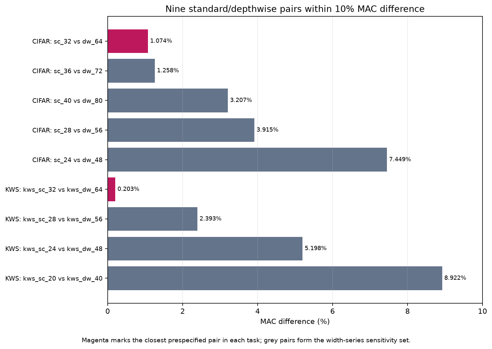
Figure 2. Near-MAC standard/depthwise pairs. The closest pair in each task is highlighted.
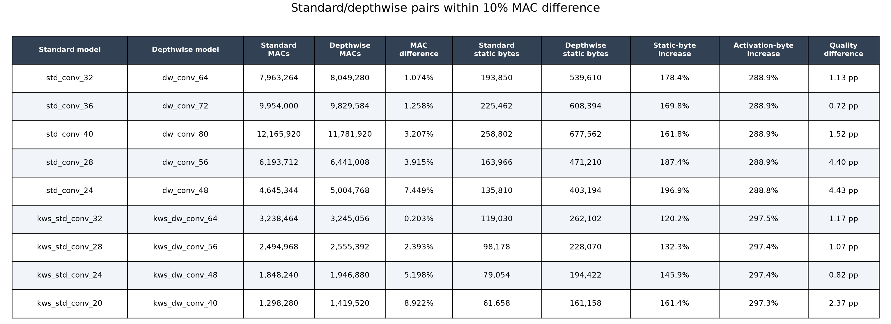
Figure 3. Static characteristics and task quality of the nine near-MAC pairs.
On Speech Commands, kws_std_conv_32 and
kws_dw_conv_64 differed by only 0.203% in MAC count; the
corresponding difference between std_conv_32 and
dw_conv_64 on CIFAR-10 was 1.074%. The depthwise models had
activation-output totals 3.975× and 3.889× those of their
standard-convolution counterparts.
These pre-hardware results established controlled conditions in which an arithmetic-only metric ranked two models as nearly equal even though their deployed graphs had different estimated data-access demands. Section 8 reports what happened when those conditions were measured on both platforms.
Across the full corpus, activation-output bytes and total static bytes have a moderate positive association: Pearson r = 0.504 and Spearman ρ = 0.546. This relationship is incomplete because parameter-heavy networks can have large static-byte estimates without large intermediate activations.
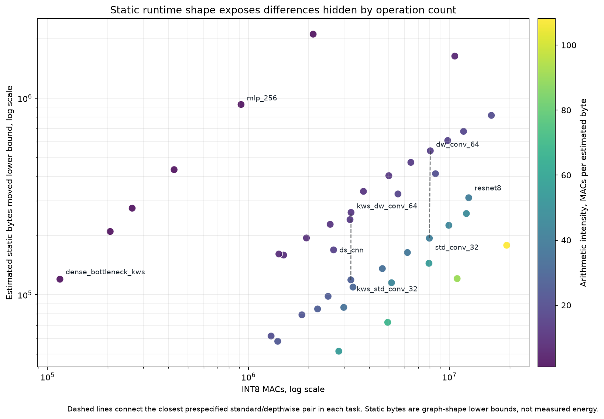
Figure 4. MAC count and static byte-access proxy across the 43 INT8 models. Dashed lines mark the primary pairs.
A broader descriptive screen identified 35 standard/depthwise combinations with MAC differences below 50%. The depthwise model had the larger static byte-access proxy in every combination, with increases from 63.3% to 271.0%. Thirty-two of the 35 combinations had at least twice the estimated static-byte demand. Because models recur across combinations, this screen describes the available comparison space and is not treated as 35 independent tests.
7. Hardware preparation
The hardware phase compares results from a Raspberry Pi 4 with those from an ESP32-S3 development board. The platforms are not forced to share an internal runtime because their architectural differences form part of the research question. The common condition instead fixes the INT8 artifact, input values and measurement principles.
Both boards were powered through the same modified USB-C cable. Its 5 V conductor passed through the INA226 module's nominal 0.002 Ω shunt before reaching the device under test [24,25]. The measurement boundary includes the selected board and its on-board regulation, but excludes the upstream supply and an independently powered cooling fan used to keep board temperature fairly constant across inference periods.
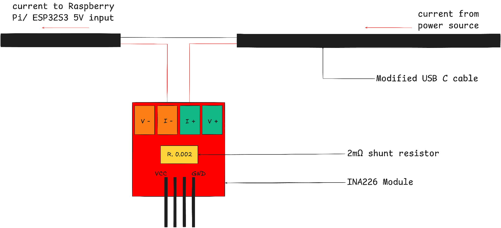
Figure 5. Shared board-input measurement path. The same modified USB-C cable and INA226 module were used for both boards.
7.1 Raspberry Pi execution condition
The Raspberry Pi 4 uses a 64-bit Linux environment on its Arm Cortex-A72 processor [26]. TensorFlow Lite artifacts execute through LiteRT 2.1.6 with the XNNPACK CPU backend and one inference thread [29,30]. The inference and logging processes are assigned to separate CPU cores. The performance governor fixes the requested minimum and maximum frequency at 1.8 GHz, with frequency and throttling state read back during every trial. An externally powered fan was held in a fixed position beside the bare board throughout formal measurement and remained outside the power-measurement boundary.
The INA226 is addressed through Raspberry Pi I²C bus 1. A 9 ms conversion interval provides approximately 111 physical result updates per second, while the logger polls the latest power register every 2 ms so that updates are unlikely to be missed. Faster polling does not create additional sensor bandwidth [24,25]. Each observation receives a monotonic timestamp for numerical energy integration.
Electrical-zero behaviour was characterized with the Raspberry Pi load disconnected and an Arduino Nano acting as the I²C host. Four repeats of 4,000 samples produced a combined apparent-current mean of −0.070 mA, no read failures and a between-repeat standard deviation of 0.006 mA. This offset is small relative to Raspberry Pi operating current and is expected to cancel substantially through active-minus-idle subtraction.
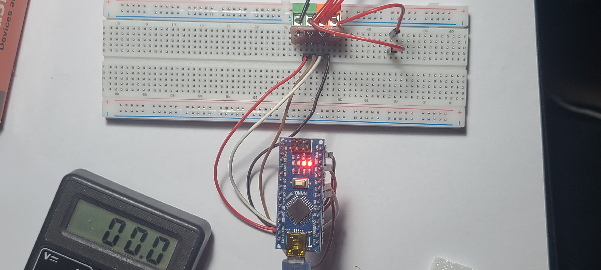
Figure 6a. INA226 electrical-zero test setup. The Raspberry Pi load is disconnected and the Arduino Nano acts as I²C host.
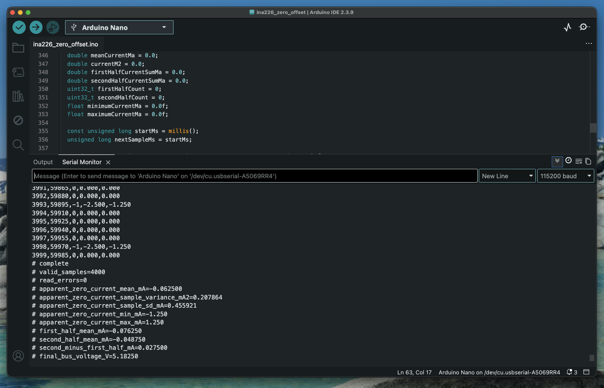
Figure 6b. Representative output from a 4,000-sample zero-current run.
7.2 ESP32-S3 execution and measurement
The ESP32-S3 executes the INT8 models through TensorFlow Lite Micro 1.4.0 with ESP-NN pinned to exactly 1.4.1 and optimized kernels at a fixed 240 MHz [12,27,31]. Model storage is memory-mapped, while the input bank and tensor arena use PSRAM. Each trial uses 25 warm-up invocations, a five-second settling period and adjacent ten-second pre-idle, active and post-idle windows.
The ESP32-S3 performs the inference workload, while a separately powered Raspberry Pi acts only as the external measurement recorder. Keeping the logger off the device under test avoids four confounds: sensor polling would add processor work and energy; inference could delay polls and lose samples; using the second core would still add board power and contention; and complete raw logs would consume limited ESP32-S3 memory or storage.
At the start of repeated inference the ESP32-S3 drives GPIO4 high and returns it low when the active phase ends. The Raspberry Pi records these edges on GPIO17 together with the INA226 samples, so the phase boundaries and power observations share one monotonic clock. This avoids mapping the ESP32-S3 clock onto the recorder clock or treating delayed USB serial messages as precise boundaries. A MacBook Pro, outside the measurement boundary, sends trial commands over USB-UART and retains the ESP32-S3 invocation-latency output [28].
7.3 Fixed measurement inputs
Four measurement banks were prepared, one for each task. Each contains 120 examples with CIFAR-10 contributing 12 examples from every class and Speech Commands with 10 from each of 12 classes. The VWW-style bank is balanced between person and no-person images. ToyADMOS contributes 15 examples from every normal/anomalous and machine-ID combination.
Every artifact for a task receives the same ordered floating-point values. INT8 conversion, file loading and reshaping occur before the measured window so that preprocessing does not become part of the reported inference energy.
7.4 Deployment and input validation
All 86 artifacts completed compatibility validation with the development-machine TensorFlow Lite runtime and deployment smoke testing through the Raspberry Pi runtime. The fixed input banks completed 10,320 development-side validation invocations without invocation failure, non-finite output or complete INT8 input saturation. Artifact format, tensor metadata, allocation, input conversion and inference completion were checked before formal measurement.
All 43 frozen INT8 artifacts then deployed on the ESP32-S3. Their hashes matched the corresponding Raspberry Pi artifacts. A conformance sweep covered 5,040 classification comparisons and 120 ToyADMOS reconstruction comparisons. One classification sample changed predicted class, so exact desktop-to-ESP32 numerical equivalence is not claimed; the frozen ESP32 artifact and input bank were nevertheless the objects actually measured.
8. Formal results
8.1 Trial completion and measurement quality
Every scheduled Raspberry Pi trial completed and satisfied the frozen
technical validity rules: 43 models × 2 precisions × 3 randomized
repetitions, or 258 valid trials. There were no inference failures or
measured-window logger errors. All trials began and ended at 1.8 GHz
with throttling flags equal to 0x0.
| Platform and check | Observed result |
|---|---|
| Raspberry Pi 4 — minimum bus voltage | 4.979 V; predeclared minimum: 4.90 V |
| Raspberry Pi 4 — maximum processor temperature | 51.608 °C; predeclared maximum: 63 °C |
| Raspberry Pi 4 — maximum power-poll gap | 10.211 ms; predeclared maximum: 18 ms |
| Raspberry Pi 4 — maximum absolute idle drift | 1.084% |
| Raspberry Pi 4 — repeatability | Median energy CV: 0.778%; 90th percentile: 2.984%; 84 of 86 conditions at or below 5% |
| Raspberry Pi 4 — conditions above 5% CV | Two; both retained under the predeclared exclusion rules |
| ESP32-S3 — accepted trials | 129: 43 INT8 models × 3 randomized repetitions |
| ESP32-S3 — measurement errors | No failed inference, power-read or auxiliary-read errors in accepted trials |
| ESP32-S3 — retained pre-measurement attempt | One serial-complete attempt without an accepted power record; retained in the audit record and replaced |
| ESP32-S3 — repeatability | Median energy CV: 0.313%; maximum: 1.728% |
| ESP32-S3 — minimum bus voltage | 5.196 V |
| ESP32-S3 — maximum device temperature | 36.2 °C |
| ESP32-S3 — maximum power-poll gap | 28.488 ms; predeclared maximum: 50 ms |
| ESP32-S3 — maximum absolute idle drift | 1.111% |
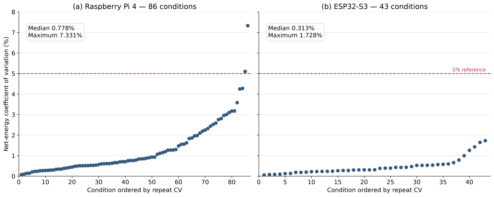
Figure 7. Net-energy repeatability across both platforms. The dashed line marks the 5% review threshold.
8.2 Corpus-wide relationships
After averaging the three runs for each condition, Raspberry Pi net energy ranged from 31.62 to 4,795.94 µJ per inference and ESP32-S3 INT8 energy ranged from 796.30 to 35,572.68 µJ. MAC count had a strong but imperfect association with energy on both platforms. The static byte-access proxy was weaker as a standalone predictor, while measured invocation latency had the strongest association.
| Predictor | Raspberry Pi FP32 Pearson r (95% family-bootstrap confidence interval) | Raspberry Pi INT8 Pearson r (95% family-bootstrap confidence interval) | ESP32-S3 INT8 Pearson r (95% family-bootstrap confidence interval) |
|---|---|---|---|
| MAC count | 0.912 [0.790, 0.986] | 0.914 [0.867, 0.976] | 0.782 [0.684, 0.912] |
| Static byte-access proxy | 0.555 [0.314, 0.849] | 0.400 [−0.018, 0.859] | 0.600 [0.273, 0.938] |
| Activation-output bytes | 0.687 [0.246, 0.886] | 0.804 [0.505, 0.931] | 0.830 [0.461, 0.958] |
| Median invocation latency | 0.998 [0.997, 0.999] | 0.998 [0.994, 0.999] | 0.996 [0.991, 0.999] |
On the log10 scale used for the headline cross-platform comparison, MAC–energy Pearson r was 0.973 for Raspberry Pi INT8 and 0.877 for ESP32-S3 INT8. FLOP results are identical because FLOPs equal exactly twice MACs under the declared counting rule; they are therefore not presented as an independent predictor.
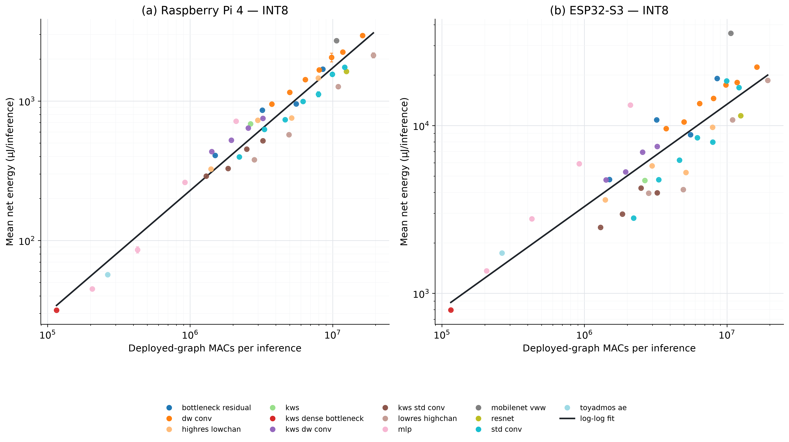
Figure 8. INT8 energy versus MAC count on both platforms. Lines are log-scale least-squares fits.
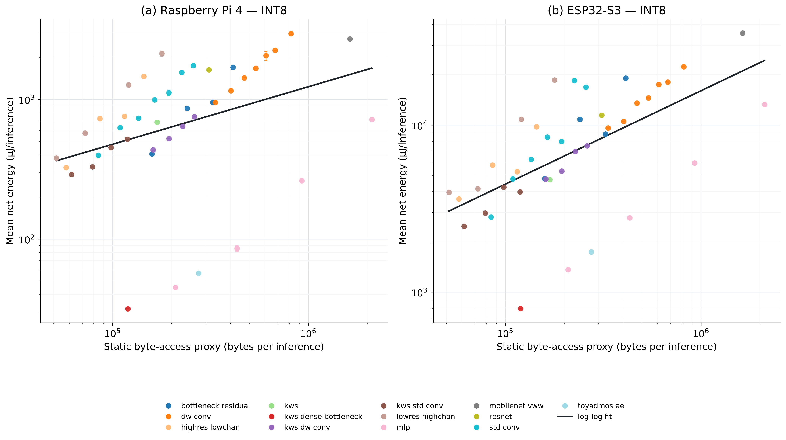
Figure 9. INT8 energy versus the static byte-access proxy on both platforms. The proxy does not measure physical memory traffic.
The task-adjusted baseline model used MAC count, parameter bytes and task. On the Raspberry Pi it explained 94.7% of the FP32 energy variation and 88.9% of the INT8 variation. Replacing parameter bytes with the predeclared static byte-access proxy increased those values to 98.9% and 91.1%, respectively. On the ESP32-S3, the corresponding replacement increased explained variation from 84.9% to 89.6% and reduced RMSE from 2,694.5 to 2,232.1 µJ. In a separate log-scale analysis of the common INT8 models, adding static bytes to a MAC-only model increased R² by 0.176 on ESP32-S3 and 0.017 on the Raspberry Pi. This indicates complementary structural information, not measured physical memory traffic.
8.3 Controlled near-MAC comparisons
The controlled pairs produced the clearest practical failure of an arithmetic-only estimate. The depthwise model required substantially more energy on both platforms despite the nearly matched MAC counts.
| Task | MAC difference | Raspberry Pi INT8 depthwise change | ESP32-S3 INT8 depthwise change | Observed ordering |
|---|---|---|---|---|
| CIFAR-10 | 1.074% | +49.5% | +82.4% | Depthwise higher on both platforms |
| Speech Commands | 0.203% | +44.8% | +88.9% | Depthwise higher on both platforms |
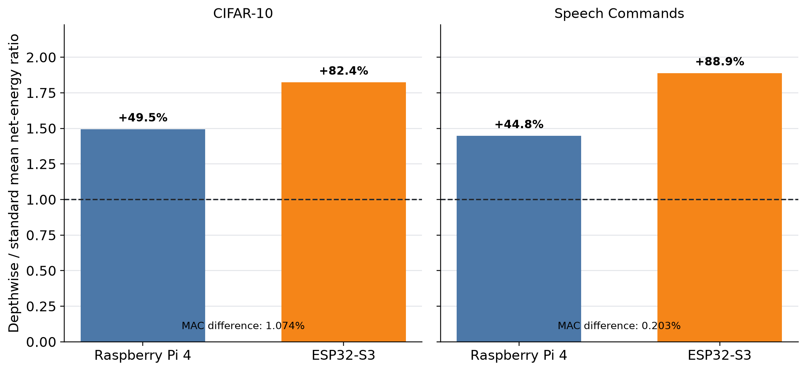
Figure 10. Energy changes for the two primary near-MAC pairs. Positive values indicate higher depthwise energy.
The energy direction followed the measured latency direction while incremental active power differed by no more than about 5%. Across the nine planned comparisons below 10% MAC difference, depthwise energy was higher in all nine Raspberry Pi INT8 comparisons and eight of nine ESP32-S3 comparisons. Because these overlapping pairs reuse models, the wider pattern is descriptive rather than nine independent tests.
Each primary pair changes both convolution structure and channel width. The experiment therefore establishes that near-equal MAC count does not guarantee near-equal energy, but it does not identify convolution type as the sole cause.
8.4 Latency and precision
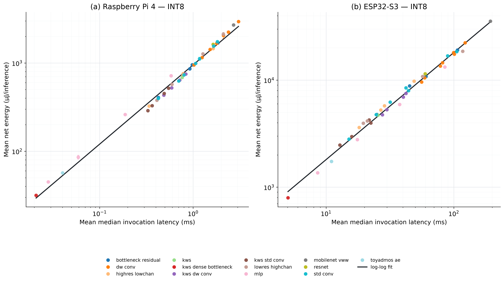
Figure 11. INT8 energy versus invocation latency on both platforms. Lines are log-scale least-squares fits.
Across the 43 common INT8 models, platform energies were strongly related but not identical: log-scale Pearson r was 0.931 and Spearman rho was 0.941.
Naturally, INT8 required less energy than FP32 for all 43 models. The median INT8-to-FP32 energy ratio was 0.672 [0.568, 0.752], equivalent to a median reduction of 32.8%. INT8 also reduced latency for 37 of 43 models, with a median latency ratio of 0.817 [0.652, 0.927]. This is a within-Raspberry-Pi precision result as the FP32 results were not part of the common cross-platform condition.
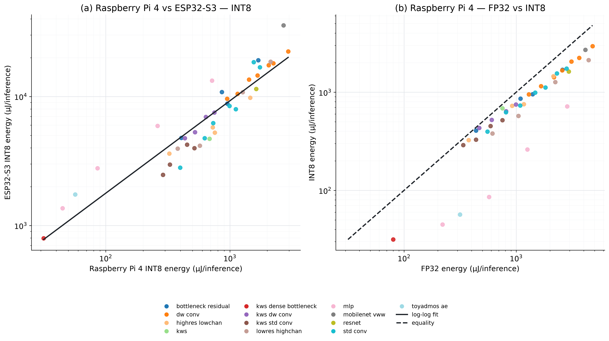
Figure 12. Cross-platform and Raspberry Pi precision comparisons. The dashed line marks equal FP32 and INT8 energy.
9. Discussion, limitations and conclusion
9.1 What the results mean
The static byte-access proxy added some information beyond MAC count, particularly on the ESP32-S3, but it remains a graph-derived estimate rather than a measurement of physical memory traffic. Invocation latency had the strongest measured association with energy on both platforms. This does not make latency a replacement for a static predictor since latency is only available after a model has been deployed and is runnning inference.
Lower power also did not mean lower energy per inference. The ESP32-S3 drew less power than the Raspberry Pi but took much longer to complete an inference, so its longer execution time outweighed its power advantage. This illustrates why power and energy are not interchangeable: inference energy depends on both the power drawn and how long that power is drawn.
An earlier complete ESP32-S3 campaign used ESP-NN 1.3.1 and produced the opposite primary-pair result: depthwise energy was 19.9% and 2.3% lower than standard convolution. With the same model artifacts and input banks under ESP-NN 1.4.1, depthwise energy was instead 82.4% and 88.9% higher. Between the campaigns, standard-model energy fell by 53.8% and 49.5%, while depthwise-model energy changed by +5.2% and −2.3%. Espressif had corrected and enabled an optimized 3 × 3 standard-convolution path that was disabled in the earlier version because of an inline-assembly priming error and a performance regression [35]. The model graphs and MAC counts did not change, showing that MACs cannot represent runtime-kernel selection. Because the releases contain other changes, the comparison does not isolate that commit as the sole cause.
9.2 What the experiment cannot identify
The ESP32-S3's longer runtime is consistent with differences in clock rate, processor architecture, flash and PSRAM access, runtime behaviour and operator implementation relative to the Raspberry Pi's Cortex-A72/XNNPACK path. These factors were not isolated experimentally. No hardware-counter measurements were retained to separate cache reuse, DRAM, flash or PSRAM transfers, kernel fusion or memory stalls. The runtime-version comparison shows that kernel selection matters, but the experiment does not assign the complete platform difference to one physical mechanism.
The primary near-MAC pairs also change channel width as well as convolution structure. They demonstrate a failure of MAC-based model ordering, but they do not identify convolution type as the sole cause of the measured energy difference.
9.3 Measurement and generalisability limits
The hardware evidence comes from one physical Raspberry Pi 4 and one physical ESP32-S3, but only INT8 was common to both platforms as the FP32 findings apply only to the Raspberry Pi.
The INA226 uses the nominal 0.002 Ω shunt value and was not subjected to traceable multipoint calibration. The results therefore support controlled relative comparisons, while the absolute energy values should not be interpreted as laboratory calibrated measurements.
During ESP32-S3 trials, the separately powered Raspberry Pi recorded the INA226 samples and GPIO phase boundaries. This kept sensor polling, timestamping and log storage out of the ESP32-S3 workload, and the energy used by the Raspberry Pi and MacBook Pro was outside the measurement boundary. The GPIO4 phase marker nevertheless introduced a small, consistent active-only load that was considered negligible and was not independently metered.
The role-based corpus intentionally contains more CIFAR-10 probes than other tasks, so it should not be interpreted as an equally weighted sample of all edge-AI workloads.
A small disclosure to note is that before energy measurement on the ESP32-S3, its outputs were compared with outputs produced on the development computer using the same models and inputs. Out of 5,040 classification comparisons, one input received a different final class on the ESP32-S3. This likely arose from a very small numerical difference near the decision boundary. Therefore, the study can confirm that the same model files and inputs were used, but cannot claim that both runtimes produced exactly identical numerical outputs in every case.
9.4 Conclusion
Across the 43 common INT8 models, MAC count described broad energy scaling on both platforms, but its strength and fine-grained ranking were hardware-dependent. The primary near-MAC pairs had almost identical MAC counts but 44.8%–49.5% energy gaps on the Raspberry Pi and 82.4%–88.9% gaps on the ESP32-S3. The immediate energy difference followed execution time rather than a large change in incremental power, and its magnitude changed substantially with the platform and runtime.
Operation counts remain useful arithmetic descriptors and broad within-platform predictors. They are not sufficient as hardware-independent energy selectors between structurally different models. Fine-grained deployment decisions require platform-aware measurement or predictors that reflect realized execution.
10. Future work
Future work will extend this measurement study into a cross-class energy-prediction system. The initial objective is to determine whether compiled-graph features and recorded platform characteristics can be combined in a regression equation to estimate net board-input energy for models that have not been physically measured on the target device. A second, calibration-assisted approach will use a small standardized kernel workload to characterize a new device before predicting the energy of the target model itself.
Development will begin with transparent MAC-only and memory-aware regression baselines before considering device-specific fused-kernel, tree-based or hierarchical models. Evaluation will hold out complete architecture families and physical devices and will report prediction error, rank accuracy, prediction-interval coverage and model-selection error. Additional architectures and hardware classes will be required because measurements from two physical devices are insufficient to claim a generally transferable prediction equation.
AI Assistance Disclosure
OpenAI Codex was used to assist with drafting, restructuring, language editing, code review and presentation of the statistical analysis in this case study. The authors reviewed and revised all assisted material, and take full responsibility for the final methods, interpretations and text.
References
- Horowitz, M. (2014). Computing's energy problem (and what we can do about it). 2014 IEEE International Solid-State Circuits Conference Digest of Technical Papers, 10–14. https://doi.org/10.1109/ISSCC.2014.6757323
- Sze, V., Chen, Y.-H., Yang, T.-J., & Emer, J. S. (2017). Efficient processing of deep neural networks: A tutorial and survey. Proceedings of the IEEE, 105(12), 2295–2329. https://doi.org/10.1109/JPROC.2017.2761740
- Henderson, P., Hu, J., Romoff, J., Brunskill, E., Jurafsky, D., & Pineau, J. (2020). Towards the systematic reporting of the energy and carbon footprints of machine learning. Journal of Machine Learning Research, 21(248), 1–43. https://www.jmlr.org/papers/v21/20-312.html
- Banbury, C., Reddi, V. J., Torelli, P., et al. (2021). MLPerf Tiny Benchmark. Proceedings of the NeurIPS Datasets and Benchmarks Track. Official proceedings record.
- Tu, X., Mallik, A., Chen, D., et al. (2023). Unveiling energy efficiency in deep learning: Measurement, prediction, and scoring across edge devices. ACM/IEEE Symposium on Edge Computing, 80–93. https://doi.org/10.1145/3583740.3628442
- Krizhevsky, A. (2009). Learning Multiple Layers of Features from Tiny Images. University of Toronto. Technical report.
- Warden, P. (2018). Speech Commands: A dataset for limited-vocabulary speech recognition. arXiv:1804.03209. https://doi.org/10.48550/arXiv.1804.03209
- Lin, T.-Y., Maire, M., Belongie, S., et al. (2014). Microsoft COCO: Common objects in context. European Conference on Computer Vision, 740–755. https://doi.org/10.1007/978-3-319-10602-1_48
- Chowdhery, A., Warden, P., Shlens, J., Howard, A., & Rhodes, R. (2019). Visual Wake Words Dataset. arXiv:1906.05721. https://doi.org/10.48550/arXiv.1906.05721
- Koizumi, Y., Saito, S., Uematsu, H., Harada, N., & Imoto, K. (2019). ToyADMOS: A dataset of miniature-machine operating sounds for anomalous sound detection. IEEE Workshop on Applications of Signal Processing to Audio and Acoustics, 313–317. https://doi.org/10.1109/WASPAA.2019.8937164
- Jacob, B., Kligys, S., Chen, B., et al. (2018). Quantization and training of neural networks for efficient integer-arithmetic-only inference. IEEE/CVF Conference on Computer Vision and Pattern Recognition, 2704–2713. Official paper.
- David, R., Duke, J., Jain, A., et al. (2021). TensorFlow Lite Micro: Embedded machine learning for TinyML systems. Proceedings of Machine Learning and Systems, 3. Official proceedings record.
- Banbury, C., Zhou, C., Fedorov, I., et al. (2021). MicroNets: Neural network architectures for deploying TinyML applications on commodity microcontrollers. Proceedings of Machine Learning and Systems, 3. Official proceedings record.
- Baller, S. P., Jindal, A., Chadha, M., & Gerndt, M. (2021). DeepEdgeBench: Benchmarking deep neural networks on edge devices. 2021 IEEE International Conference on Cloud Engineering, 20–30. https://doi.org/10.1109/IC2E52221.2021.00016
- Bartoli, P., Veronesi, C., Giudici, A., Siorpaes, D., Trojaniello, D., & Zappa, F. (2025). Benchmarking energy and latency in TinyML: A novel method for resource-constrained AI. 2025 International Joint Conference on Neural Networks, 1–8. https://doi.org/10.1109/IJCNN64981.2025.11228997
- Cai, E., Juan, D.-C., Stamoulis, D., & Marculescu, D. (2017). NeuralPower: Predict and deploy energy-efficient convolutional neural networks. arXiv:1710.05420. https://doi.org/10.48550/arXiv.1710.05420
- Rodrigues, C. F., Riley, G., & Luján, M. (2020). Energy predictive models for convolutional neural networks on mobile platforms. arXiv:2004.05137. https://doi.org/10.48550/arXiv.2004.05137
- Speckhard, D. T., Misiunas, K., Perel, S., Zhu, T., Carlile, S., & Slaney, M. (2023). Neural architecture search for energy-efficient always-on audio machine learning. Neural Computing and Applications, 35, 12133–12144. https://doi.org/10.1007/s00521-023-08345-y
- Tschand, A., Rajan, A. T. R., Idgunji, S., et al. (2025). MLPerf Power: Benchmarking the energy efficiency of machine learning systems from microwatts to megawatts for sustainable AI. 2025 IEEE International Symposium on High Performance Computer Architecture. https://doi.org/10.1109/HPCA61900.2025.00092
- Ma, N., Zhang, X., Zheng, H.-T., & Sun, J. (2018). ShuffleNet V2: Practical guidelines for efficient CNN architecture design. European Conference on Computer Vision, 116–131. Official paper.
- Ancilotto, A., Paissan, F., & Farella, E. (2023). XiNet: Efficient neural networks for tinyML. IEEE/CVF International Conference on Computer Vision, 16968–16977. Official paper.
- Williams, S., Waterman, A., & Patterson, D. (2009). Roofline: An insightful visual performance model for multicore architectures. Communications of the ACM, 52(4), 65–76. https://doi.org/10.1145/1498765.1498785
- Davison, A. C., & Hinkley, D. V. (1997). Bootstrap methods and their application. Cambridge University Press. Publisher record.
- Texas Instruments. (2024). INA226 high-side or low-side measurement, bidirectional current and power monitor with I²C-compatible interface (Rev. B). Datasheet.
- Linux kernel documentation. (n.d.). Kernel driver ina2xx. Driver documentation.
- Raspberry Pi Ltd. (2019). Raspberry Pi 4 Model B product brief. Product brief.
- Espressif Systems. (n.d.-a). ESP32-S3 technical reference manual. Technical reference manual.
- Espressif Systems. (n.d.-b). ESP32-S3-DevKitC-1 user guide. Development-board guide.
- Google. (n.d.). XNNPACK. Official repository.
- Google AI Edge. (n.d.). LiteRT Interpreter API. API documentation.
- Espressif Systems. (n.d.-c). ESP-NN: Optimized neural-network functions for Espressif chipsets. Official repository.
- Wess, M., Dallinger, D., Schnöll, D., Bittner, M., Götzinger, M., & Jantsch, A. (2023). Energy profiling of DNN accelerators. 2023 26th Euromicro Conference on Digital System Design, 53–60. https://doi.org/10.1109/DSD60849.2023.00018
- Lahmer, S., Khoshsirat, A., Rossi, M., & Zanella, A. (2022). Energy consumption of neural networks on NVIDIA edge boards: An empirical model. 2022 20th International Symposium on Modeling and Optimization in Mobile, Ad Hoc, and Wireless Networks, 365–371. https://doi.org/10.23919/WiOpt56218.2022.9930584
- Guo, C., Wang, S., Xie, R., & Song, J. (2025). Estimating energy consumption of neural networks with joint structure–device encoding. Sustainable Computing: Informatics and Systems, 45, 101062. https://doi.org/10.1016/j.suscom.2024.101062
- Espressif Systems. (2026). perf(conv/s3): enable the 3x3 im2col path [Git commit]. Commit 0c428a3.